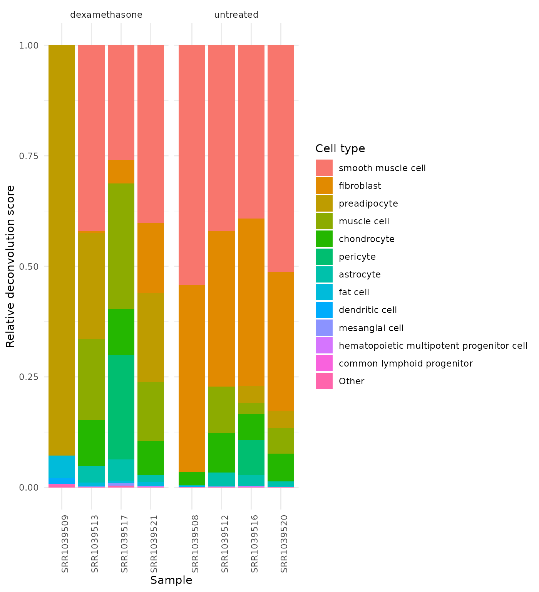
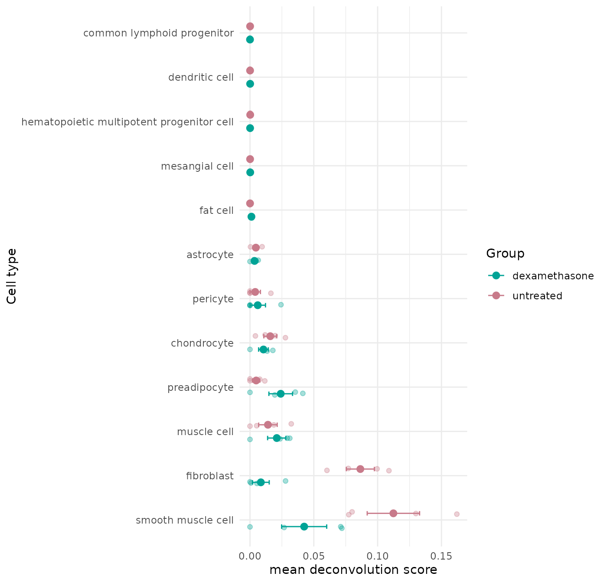
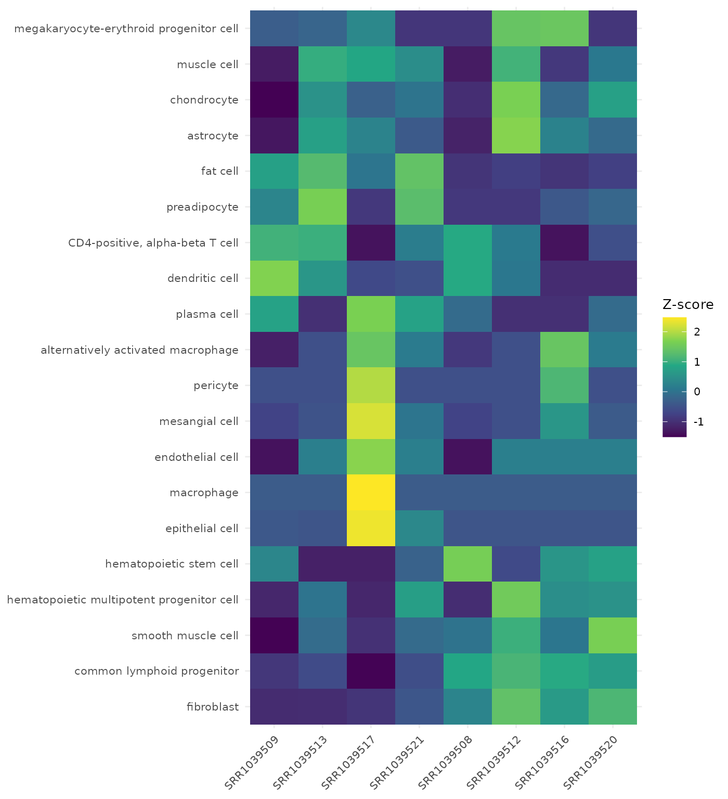

Cell-Type Deconvolution with VISTA (airway)
VISTA Development Team
Source:vignettes/workflows/VISTA-deconvolution.Rmd
VISTA-deconvolution.RmdOverview
This vignette demonstrates how to run cell-type
deconvolution with VISTA using the Bioconductor
airway dataset.
Workflow covered:
- Build a
VISTAobject from airway counts and metadata. - Run
run_cell_deconvolution()(xCell2 backend). - Extract cell-fraction estimates with
get_cell_fractions(). - Visualize sample-level composition with
get_celltype_barplot(). - Compare treatment groups with
get_celltype_group_dotplot(). - Inspect cell-type/sample structure with
get_celltype_heatmap().
Prepare Airway Data
data("airway", package = "airway")
counts_matrix <- SummarizedExperiment::assay(airway, "counts")
sample_metadata <- as.data.frame(SummarizedExperiment::colData(airway))
# Keep sample IDs explicit for VISTA alignment.
sample_metadata$sample_names <- rownames(sample_metadata)
sample_metadata$cond_long <- ifelse(sample_metadata$dex == "trt", "dexamethasone", "untreated")
count_data <- as.data.frame(counts_matrix) %>%
tibble::rownames_to_column("gene_id")
# Ensure column order follows sample_metadata.
count_data <- count_data[, c("gene_id", sample_metadata$sample_names)]
dim(count_data)
#> [1] 63677 9
sample_metadata[, c("sample_names", "cell", "dex", "cond_long")]
#> sample_names cell dex cond_long
#> SRR1039508 SRR1039508 N61311 untrt untreated
#> SRR1039509 SRR1039509 N61311 trt dexamethasone
#> SRR1039512 SRR1039512 N052611 untrt untreated
#> SRR1039513 SRR1039513 N052611 trt dexamethasone
#> SRR1039516 SRR1039516 N080611 untrt untreated
#> SRR1039517 SRR1039517 N080611 trt dexamethasone
#> SRR1039520 SRR1039520 N061011 untrt untreated
#> SRR1039521 SRR1039521 N061011 trt dexamethasoneCreate VISTA Object
vista_airway <- create_vista(
counts = count_data,
sample_info = sample_metadata,
column_geneid = "gene_id",
group_column = "cond_long",
group_numerator = "dexamethasone",
group_denominator = "untreated",
covariates = "cell",
method = "deseq2",
min_counts = 10,
min_replicates = 1
)
# Add gene annotations (used for downstream interpretation and fallback symbol mapping).
vista_airway <- set_rowdata(
vista_airway,
orgdb = org.Hs.eg.db,
columns = c("SYMBOL", "GENENAME", "ENTREZID"),
keytype = "ENSEMBL"
)
vista_airway
#> class: VISTA
#> dim: 18086 8
#> metadata(12): de_results de_summary ... design comparison
#> assays(2): norm_counts counts
#> rownames(18086): ENSG00000000003 ENSG00000000419 ... ENSG00000273487
#> ENSG00000273488
#> rowData names(4): baseMean SYMBOL GENENAME ENTREZID
#> colnames(8): SRR1039508 SRR1039509 ... SRR1039520 SRR1039521
#> colData names(12): SampleName cell ... sizeFactor sample_names
#> -------- VISTA --------
#> group column: cond_long (untreated, dexamethasone)
#> comparisons: dexamethasone_VS_untreated
#> DE source: deseq2
#> cutoffs: |log2FC| >= 1, padj <= 0.05
#> raw counts: available via counts()
#> schema: 1.1.0Run Deconvolution
run_cell_deconvolution() currently uses xCell2.
If xCell2 is unavailable, this vignette will skip
deconvolution sections.
cat("Package 'xCell2' is not installed; deconvolution steps are skipped.\n")
cat("Install it to run these sections:\n")
cat(" Install package 'xCell2' from Bioconductor.\n")
# First try default threshold, then relax minSharedGenes if needed.
deconv_try <- tryCatch(
run_cell_deconvolution(
x = vista_airway,
method = "xCell2",
gene_id_type = "ensembl"
),
error = function(e) e
)
if (inherits(deconv_try, "error")) {
msg <- conditionMessage(deconv_try)
if (grepl("minSharedGenes", msg, fixed = TRUE)) {
message("Retrying xCell2 deconvolution with minSharedGenes = 0.6")
deconv_try <- tryCatch(
run_cell_deconvolution(
x = vista_airway,
method = "xCell2",
gene_id_type = "ensembl",
minSharedGenes = 0.6
),
error = function(e) e
)
}
}
if (inherits(deconv_try, "error")) {
has_deconv <- FALSE
message("Deconvolution could not be completed in this environment:\n", conditionMessage(deconv_try))
} else {
vista_deconv <- deconv_try
has_deconv <- TRUE
vista_deconv
}
#> class: VISTA
#> dim: 18086 8
#> metadata(13): de_results de_summary ... comparison cell_fractions
#> assays(2): norm_counts counts
#> rownames(18086): ENSG00000000003 ENSG00000000419 ... ENSG00000273487
#> ENSG00000273488
#> rowData names(4): baseMean SYMBOL GENENAME ENTREZID
#> colnames(8): SRR1039508 SRR1039509 ... SRR1039520 SRR1039521
#> colData names(12): SampleName cell ... sizeFactor sample_names
#> -------- VISTA --------
#> group column: cond_long (untreated, dexamethasone)
#> comparisons: dexamethasone_VS_untreated
#> DE source: deseq2
#> cutoffs: |log2FC| >= 1, padj <= 0.05
#> raw counts: available via counts()
#> schema: 1.1.0Inspect Cell Fractions
cell_fractions <- get_cell_fractions(vista_deconv)
dim(cell_fractions)
#> [1] 8 43
cell_fractions[1:min(4, nrow(cell_fractions)), 1:min(6, ncol(cell_fractions))]
#> neutrophil monocyte megakaryocyte-erythroid progenitor cell
#> SRR1039508 2.752619e-22 0.000000e+00 0.000000e+00
#> SRR1039509 4.663189e-23 0.000000e+00 1.275113e-05
#> SRR1039512 0.000000e+00 1.591268e-20 5.104317e-05
#> SRR1039513 4.705297e-22 0.000000e+00 1.531342e-05
#> CD4-positive, alpha-beta T cell regulatory T cell
#> SRR1039508 2.780816e-05 0
#> SRR1039509 2.989538e-05 0
#> SRR1039512 1.816742e-05 0
#> SRR1039513 2.925070e-05 0
#> central memory CD4-positive, alpha-beta T cell
#> SRR1039508 4.065957e-23
#> SRR1039509 4.855394e-31
#> SRR1039512 2.745121e-23
#> SRR1039513 0.000000e+00Plot Cell-Type Composition
get_celltype_barplot(
x = vista_deconv,
group_column = "cond_long",
top_n = 12,
collapse_other = TRUE,
normalize = "sample",
facet_by = "group",
base_size = 11
)
Group-Level Dot Plot
This plot summarizes deconvolution signal by treatment group while keeping sample-level points visible.
get_celltype_group_dotplot(
x = vista_deconv,
group_column = "cond_long",
top_n = 12,
summary_fun = "mean",
error = "se",
add_points = TRUE,
point_size = 2.5,
base_size = 11
)
Cell-Type Heatmap
The heatmap is useful to inspect sample-level deconvolution structure and concordance within groups.
get_celltype_heatmap(
x = vista_deconv,
group_column = "cond_long",
top_n = 20,
transform = "zscore",
cluster_rows = TRUE,
cluster_columns = FALSE,
label = FALSE,
base_size = 10
)
Notes on Interpretation
- xCell2 outputs are typically enrichment-like abundance scores rather than absolute percentages.
- Use group-level differences and consistency across replicates as the primary interpretation signal.
- Treat results as hypothesis-generating; validate with orthogonal assays when possible.
Session Info
sessionInfo()
#> R version 4.6.1 (2026-06-24)
#> Platform: x86_64-pc-linux-gnu
#> Running under: Ubuntu 24.04.4 LTS
#>
#> Matrix products: default
#> BLAS: /usr/lib/x86_64-linux-gnu/openblas-pthread/libblas.so.3
#> LAPACK: /usr/lib/x86_64-linux-gnu/openblas-pthread/libopenblasp-r0.3.26.so; LAPACK version 3.12.0
#>
#> locale:
#> [1] LC_CTYPE=C.UTF-8 LC_NUMERIC=C LC_TIME=C.UTF-8
#> [4] LC_COLLATE=C.UTF-8 LC_MONETARY=C.UTF-8 LC_MESSAGES=C.UTF-8
#> [7] LC_PAPER=C.UTF-8 LC_NAME=C LC_ADDRESS=C
#> [10] LC_TELEPHONE=C LC_MEASUREMENT=C.UTF-8 LC_IDENTIFICATION=C
#>
#> time zone: UTC
#> tzcode source: system (glibc)
#>
#> attached base packages:
#> [1] stats4 stats graphics grDevices utils datasets methods
#> [8] base
#>
#> other attached packages:
#> [1] org.Hs.eg.db_3.23.1 AnnotationDbi_1.74.0
#> [3] ggplot2_4.0.3 tidyr_1.3.2
#> [5] tibble_3.3.1 dplyr_1.2.1
#> [7] airway_1.32.0 SummarizedExperiment_1.42.0
#> [9] Biobase_2.72.0 GenomicRanges_1.64.0
#> [11] Seqinfo_1.2.0 IRanges_2.46.0
#> [13] S4Vectors_0.50.1 BiocGenerics_0.58.1
#> [15] generics_0.1.4 MatrixGenerics_1.24.0
#> [17] matrixStats_1.5.0 VISTA_1.1.5
#> [19] BiocStyle_2.40.0
#>
#> loaded via a namespace (and not attached):
#> [1] splines_4.6.1 filelock_1.0.3
#> [3] ggplotify_0.1.3 polyclip_1.10-7
#> [5] graph_1.90.0 minpack.lm_1.2-4
#> [7] enrichit_0.2.1 XML_3.99-0.23
#> [9] lifecycle_1.0.5 httr2_1.3.0
#> [11] rstatix_1.1.0 edgeR_4.10.1
#> [13] processx_3.9.0 lattice_0.22-9
#> [15] MASS_7.3-65 backports_1.5.1
#> [17] magrittr_2.0.5 limma_3.68.4
#> [19] sass_0.4.10 rmarkdown_2.31
#> [21] jquerylib_0.1.4 yaml_2.3.12
#> [23] otel_0.2.0 ggtangle_0.1.2
#> [25] DBI_1.3.0 RColorBrewer_1.1-3
#> [27] abind_1.4-8 quadprog_1.5-8
#> [29] purrr_1.2.2 msigdbr_26.1.0
#> [31] pracma_2.4.6 yulab.utils_0.2.4
#> [33] tweenr_2.0.3 rappdirs_0.3.4
#> [35] aisdk_1.4.12 gdtools_0.5.1
#> [37] enrichplot_1.32.0 ggrepel_0.9.8
#> [39] tidytree_0.4.8 annotate_1.90.0
#> [41] pkgdown_2.2.1 codetools_0.2-20
#> [43] DelayedArray_0.38.2 DOSE_4.6.0
#> [45] ggforce_0.5.0 tidyselect_1.2.1
#> [47] aplot_0.3.1 farver_2.1.2
#> [49] BiocFileCache_3.2.0 jsonlite_2.0.0
#> [51] Formula_1.2-6 systemfonts_1.3.2
#> [53] progress_1.2.3 tools_4.6.1
#> [55] ggnewscale_0.5.2 treeio_1.36.1
#> [57] xCell2_1.4.0 ragg_1.5.2
#> [59] Rcpp_1.1.2 glue_1.8.1
#> [61] SparseArray_1.12.2 xfun_0.60
#> [63] DESeq2_1.52.0 qvalue_2.44.0
#> [65] withr_3.0.3 BiocManager_1.30.27
#> [67] fastmap_1.2.0 GGally_2.4.0
#> [69] callr_3.8.0 digest_0.6.39
#> [71] R6_2.6.1 gridGraphics_0.5-1
#> [73] textshaping_1.0.5 colorspace_2.1-3
#> [75] GO.db_3.23.1 RSQLite_3.53.3
#> [77] fontLiberation_0.1.0 prettyunits_1.2.0
#> [79] httr_1.4.8 htmlwidgets_1.6.4
#> [81] S4Arrays_1.12.0 ontologyIndex_2.12
#> [83] scatterpie_0.2.6 ggstats_0.13.0
#> [85] pkgconfig_2.0.3 gtable_0.3.6
#> [87] blob_1.3.0 S7_0.2.2
#> [89] SingleCellExperiment_1.34.0 XVector_0.52.0
#> [91] clusterProfiler_4.20.0 htmltools_0.5.9
#> [93] fontBitstreamVera_0.1.1 carData_3.0-6
#> [95] bookdown_0.47 zigg_0.0.2
#> [97] GSEABase_1.74.0 scales_1.4.0
#> [99] png_0.1-9 ggfun_0.2.1
#> [101] knitr_1.51 tzdb_0.5.0
#> [103] reshape2_1.4.5 nlme_3.1-169
#> [105] curl_7.1.0 cachem_1.1.0
#> [107] stringr_1.6.0 BiocVersion_3.23.1
#> [109] parallel_4.6.1 desc_1.4.3
#> [111] pillar_1.11.1 grid_4.6.1
#> [113] vctrs_0.7.3 ggpubr_1.0.0
#> [115] car_3.1-5 tidydr_0.0.6
#> [117] dbplyr_2.6.0 xtable_1.8-8
#> [119] cluster_2.1.8.2 singscore_1.32.0
#> [121] evaluate_1.0.5 readr_2.2.0
#> [123] cli_3.6.6 locfit_1.5-9.12
#> [125] compiler_4.6.1 rlang_1.3.0
#> [127] crayon_1.5.3 ggsignif_0.6.4
#> [129] labeling_0.4.3 ps_1.9.3
#> [131] plyr_1.8.9 fs_2.1.0
#> [133] ggiraph_0.9.6 stringi_1.8.9
#> [135] viridisLite_0.4.3 BiocParallel_1.46.0
#> [137] assertthat_0.2.1 babelgene_22.9
#> [139] Biostrings_2.80.1 lazyeval_0.2.3
#> [141] GOSemSim_2.38.3 fontquiver_0.2.1
#> [143] Matrix_1.7-5 hms_1.1.4
#> [145] patchwork_1.3.2 bit64_4.8.2
#> [147] KEGGREST_1.52.2 statmod_1.5.2
#> [149] AnnotationHub_4.2.2 Rfast_2.1.5.2
#> [151] igraph_2.3.3 broom_1.0.13
#> [153] memoise_2.0.1 RcppParallel_6.2.0
#> [155] bslib_0.12.0 ggtree_4.2.0
#> [157] bit_4.6.0 ape_5.8-1
#> [159] gson_0.2.1